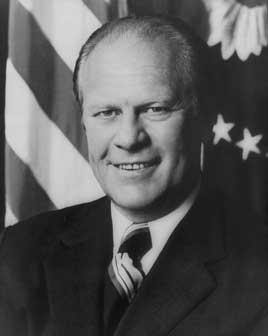

The only president never elected president or vice president. He took office when Nixon resigned, pardoned him a month later, and governed through high inflation, the deep 1974–75 recession, the fall of Saigon and two attempts on his life. He lost narrowly to Jimmy Carter in 1976.
Shaded areas show the years in office, with a few years before and after for comparison. Budget years ran July to June until 1976 (now October to September), so each year's figures cover parts of two calendar years.
June 30, 1974 (end of fiscal 1974): $475.06 billion → June 30, 1976 (end of fiscal 1976): $620.43 billion
Daily debt figures don't exist before 1993, so Ford's numbers use the fiscal years closest to his term.
Debt as a share of GDP. Above 100% means the debt is bigger than a year of everything the country produces.
Money borrowed each budget year (below the line) or paid down (above).
Aug 1974: 5.5% → Jan 1977: 7.5%. Monthly rates; the chart shows yearly averages.
How much prices rose each year (consumer price index).
What everyday prices and paychecks did while in office.
Prices use the consumer price index (MeasuringWorth). The minimum wage is the federal rate set by Congress.
169 orders, numbered 11798–11966. The split between 1974 and 1975 may be off by one order.
Source: National Archives: Ford executive orders (full list of every order).
Set up a board to review cases of draft evaders and deserters who agreed to do alternative service.
Federal RegisterCreated a commission to investigate illegal CIA spying on Americans, after press reports.
Federal RegisterCreated the committee that reviews foreign purchases of U.S. companies for national security risks.
Federal RegisterThe first presidential ban on political assassination by U.S. government employees, after revelations of plots against foreign leaders.
Federal RegisterSource: Executive Orders Archive, compiled from the American Presidency Project and the Federal Register. Topics are the archive's automated tags; "Revoked" and similar labels come from the Federal Register's records.
A pardon wipes out the punishment for a federal crime; a commutation shortens a sentence but leaves the conviction. Counts are by federal fiscal year (fiscal 1976 ran 15 months). They leave out Nixon's pardon and the roughly 14,000 draft evaders and deserters granted clemency through his Clemency Board.
Source: U.S. Dept. of Justice, clemency statistics, which lists every recipient with the crime and sentence.
The crime: Any federal crimes he committed or may have committed as president (the Watergate cover-up)
Sentence: Never charged
Why it drew attention: A month after taking office. Ford said the country needed to move on; critics suspected a deal. His approval rating fell about 20 points almost overnight.
SourceThe crime: Evading the draft or deserting the military during the Vietnam War
Sentence: Prison or exile
Why it drew attention: Offered in exchange for up to two years of alternative service. About 22,500 of an eligible 113,000 applied.
SourceThe crime: Treason for making Japanese propaganda radio broadcasts in World War II (convicted 1949)
Sentence: 10 years; about six served
Why it drew attention: Later evidence showed key witnesses had been pressured to lie; she is the only American convicted of treason to be pardoned.
SourceThe same checklist for every president. Tap a row for details and sources.
No articles of impeachment were voted on.
In 1976 the Watergate special prosecutor investigated claims about Ford's campaign funds as a congressman and cleared him.
On October 17, 1974 he became the first sitting president to testify before a congressional committee, telling a House panel there was no deal behind Nixon's pardon.
SourceNo member of his administration was convicted.
No official finding. His administration's commissions exposed past abuses by the CIA and FBI under earlier presidents.
What happened, what was proven, and how it ended.
He pardoned his predecessor for any Watergate crimes before charges were filed.
Outcome: Hugely unpopular at the time and likely cost him the 1976 election; later widely seen as an act of courage (he won the JFK Profile in Courage Award in 2001).
SourceCritics alleged Nixon's team offered Ford the presidency in exchange for a pardon.
Outcome: Ford denied it under oath to Congress; no evidence of a deal has been found.
SourceMarines stormed a Cambodian island to rescue the crew of a seized U.S. cargo ship; the crew had already been released.
Outcome: 41 U.S. servicemen died, more than the 39 crew members rescued.
SourceHe threatened to veto federal help for a nearly bankrupt New York City.
Outcome: A newspaper headline, 'Ford to City: Drop Dead', stuck to him; he later agreed to federal loans.
SourceWidely quoted remarks, with the context they were said in.
My fellow Americans, our long national nightmare is over.
There was no deal, period, under no circumstances.
There is no Soviet domination of Eastern Europe, and there never will be under a Ford administration.